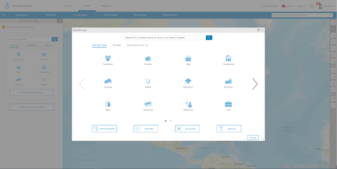
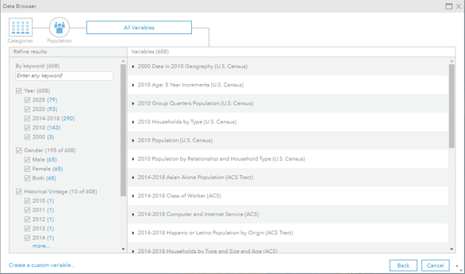
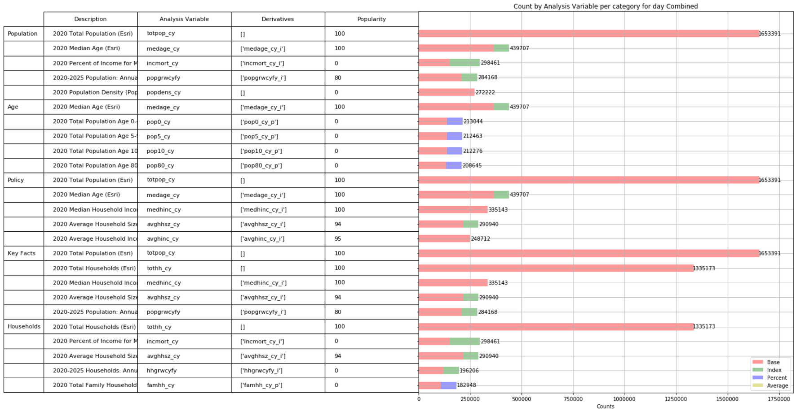
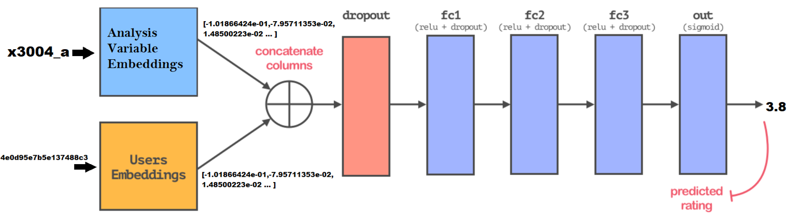
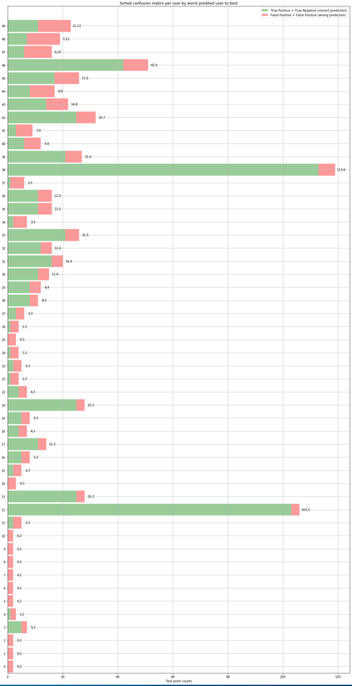
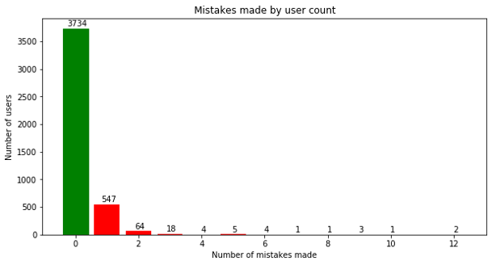
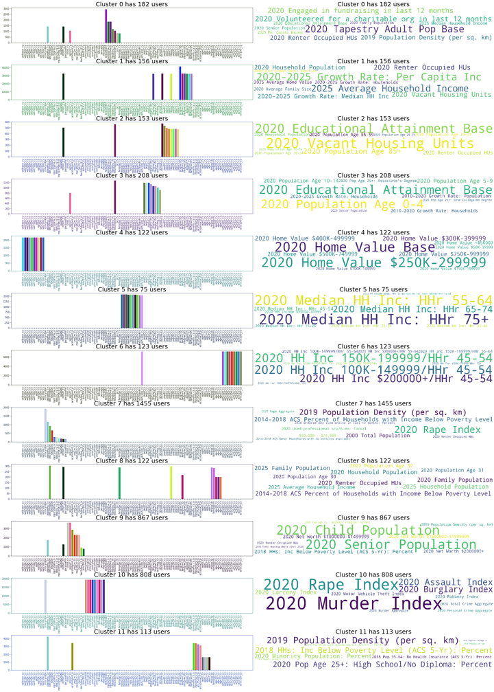

Software Engineering Intern
Data Browser: A problem of plenty
- 
- 
Users of the business analyst website are able to enrich a certain area with available datasets also called analysis variables. This essentially means displaying statistical information about an area. For example a user can choose to enrich the Boulder county area with the population dataset which shows the population densities of different parts of the county. The data browser is used to present the list of available datasets that can be used to enrich an area. The data browser first presents the user with a list of categories of datasets.
Once the user picks a category, he/she is navigated to the list of available datasets for that category. Since each category contains a plethora of datasets, sifting through the list can be daunting task if the user does not already know what dataset he/she is looking for. This is akin to a Netflix user being overwhelmed by vast expanse of movies on the Netflix home page. Without some sort of recommendation, the user will have a bad experience trying to sift through a lot of movies they are not interested in. This problem of plenty arises in the data browser and the summer internship delt with trying to solve this problem using previous collected user - analysis variable (dataset) usage data.
Parsed 128GB of request logs in 20 minutes using map-reduce
A month of user - analysis variable (dataset) usage logs consisted of 128GB of data. The logs consisted of user requests to the REST API server. Each log contained a unique user hash code and the list of variable the user used for enrichment in a single request along with a plethora of other information about that REST API request. The logs were parsed to extract required information and relevant statistics were collected regarding analysis variable usage. Since the size of request of logs were large an efficiently framework had to be designed to efficiently collect statistics. A map-reduce parallel processing framework was designed to collect required stats which greatly improved efficiency by reducing processing time. 128GB of log files were parsed using the map-reduce framework in less than 20 minutes on a single machine. Using a distributed framework could further reduce this time in the future. The graph below shows on of the stats collected. The graph shows the top 5 analysis variables (datasets) used per category based on raw usage counts from the logs. These analysis variable (dataset) counts were normalized between 0-100 per category to give popularity scores for all variables in a category based on usage across all users. These scores were used to sort analysis variables (dataset) list to better represent them in the data browser.
Built a recommender system to make custom recommendations per user.
While the previous step created popularity scores across all users, this step created recommendations tailored to a specific user based on their usage history. This was done by first collecting user analysis variables pairs, along with the usage counts for a particular analysis variable for a particular user. The usage counts were normalized per user between 0-5 to create recommendation scores for a analysis variable given a user. The task now was to build a model that uses the user analysis variables scores that are known to predict score for user analysis variable pairs that we don't know. This was done using a neural network. The network was fed user - analysis variable pairs and was trained on known recommendation scores. The first layer of the model consists of unique embeddings for each unique analysis variable and each unique user. These embeddings are learned by the model during training and each embedding mathematically represents a single analysis variable or a single user based on what the model has learned from the data. This technique essentially uses a neural network to factorized the recommendation matrix like the commonly used Single Value Decomposition does.
Tested model based on individual user recommendations.
- 
The data set of user - analysis variable pairs along with know recommendation score was split per user into training and test set with 95% of data used for training and the remaining 5% used for testing per user. This lead to the collection of training and test sets that contained information about every user in both sets. Once the model was trained, a simple MSE test was run to evaluate the model on testing data which lead to a score of 0.86 which is comparable to the baseline score of 0.74 on the benchmark movie recommendations dataset.
To better evaluate the model, individual user recommendations were tested. To do this, testing recommendation scores were converted to binary values using a threshold. As an example, for recommendation scores between 0-5, if a threshold of 2.8 was set, a score of 2.5 would be a 0 and a score 3.8 would be a 1. The same technique was used to convert the predicted recommendation scores for the test user-analysis variable data to binary values converting testing to a binary problem. Using this it could be said if a model made mistake in predicting a testing data point or if the model was correct. For example, with a threshold of 2.8, if the model predicts a 3.8 (or a 1) and the actual recommendation score is 4.1 (or a 1) the model has correctly predicted the testing point. Using this the graph on the right was created with the green showing the incorrect predictions and the red showing incorrect predictions for test data per user. The users are sorted by incorrect predictions, with the user having the most incorrect predictions first. The top 50 worst performing users as per test data is shown in the graph on the right. From the graph it can be seen that by the 50th user, the number of mistakes have gone down to two with every user after this having less mistakes than 2. Since each user had different amount of usage the testing data per user was uneven. Normalizing based on amount of testing data per user could be a future improvement.
As all users cannot be shown in a single graph, the graph below shows a combination of testing results for all users. The graph below shows how the model makes zero mistakes for most users (3734) and as the number of users go up the number of mistakes go down. This was an indicator of the model performing well.
Visualized the model using user embeddings
The first layer of the model consists of unique embeddings for each unique analysis variable and each unique user. These embeddings are learned by the model during training and each embedding mathematically represents a single analysis variable or a single user based on what the model has learned from the data. To better understand the what the model had learned, the user embedding were extracted and clustered using K-means clustering. By creating clusters of users, a better understanding of what users the model thought was similar could be gained. This is analogues to a model learning that users who like horror movies should have similar vectors and hence should be in a single cluster. Since we already know what analysis variables each user used and how much they used it form the usage logs, each user cluster was converted to analysis variable. This was done by finding counts of all analysis variables used by a users in a cluster and summing these with counts of analysis variables of other users in that cluster to get variable usage counts for a user cluster. This is analogues to collecting the movies watched by similar users in the movie example. In the movie example one would like to see a single user cluster have names of just horror movies. This is what was observed in case of the analysis variables. Taking a closer look at cluster 10 in the figure below it can be seen that all the variables have to do with crime data. This means model has successfully learned similar vectors for users who like crime data proving the model using visualization.
-
The code for parsing logs and building the machine learning framework was written in Python 3.

-
AWS S3 was used to store and access user data.

-
Scikit-learn, and Keras were used in building the machine learning framework.
-
Pandas, numpy and matplotlib were heavily used for analyzing data.